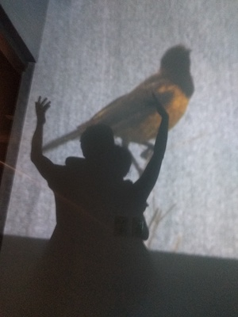

Info

Ricardo Alfonzo Dueñas es un ingeniero electrónico colombiano que usa la tecnología como vehículo de experimentación para poner en relación el cuerpo y el dispositivo tecnológico a través del acto creativo. Desarrollador Unity y programador de entornos de interacción, ha colaborado en proyectos transdisciplinares que fusionan arte y tecnología: instalaciones interactivas, realidad virtual, formato full dome y robótica para artes escénicas.
Una cercanía temprana con la danza contemporánea y otra más reciente y duradera con el tango hacen que la atención al cuerpo y al movimiento esté siempre presente en su exploración. Su experiencia en la pedagogía de las artes electrónicas lo ha llevado a trabajar en entornos donde la ciencia y la tecnología se entienden como medios de creación sensible.
Se destaca por poner en diálogo diversas disciplinas al servicio de la creación artística y la pedagogía de las artes. Le apasiona el papel que la tecnología desempeña en las formas de crear y experimentar, y el rol de las agrupaciones como agentes de cambio social.